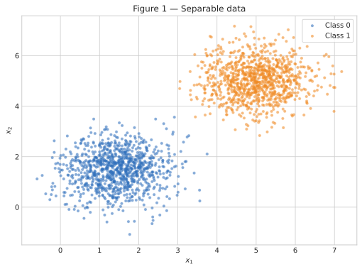
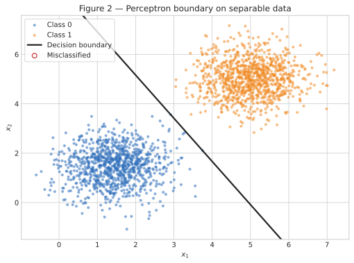
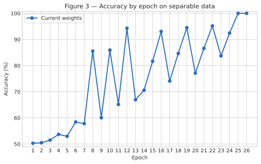
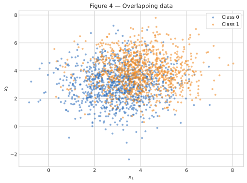
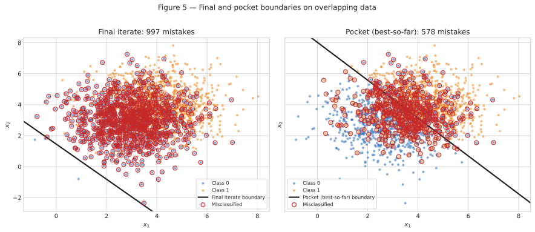
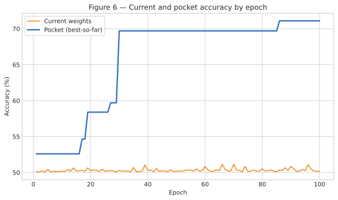

2. Perceptron
Este relatório compara o comportamento do mesmo perceptron em dois cenários: dados
linearmente separáveis e dados com forte sobreposição. O classificador foi implementado
do zero com NumPy; nenhuma implementação pronta de modelo foi utilizada. A única fonte de
aleatoriedade do relatório é rng = np.random.default_rng(42), mantida durante todos os
experimentos.
Exercise 1
A — Generate the data
Foram geradas 1.000 observações de cada classe. Para a Classe 0, usei média \([1{,}5, 1{,}5]\); para a Classe 1, média \([5, 5]\). As duas classes usam a matriz de covariância
Assim, o conjunto tem 2.000 pontos bidimensionais. A Figura 1 mostra duas nuvens bem afastadas em relação à dispersão dentro de cada classe.

/// caption Figura 1 — Dados do Exercício 1: 1.000 pontos por classe, com as médias e a covariância especificadas no enunciado. ///B — Implement the perceptron
O perceptron calcula o escore \(z=\mathbf{w}^{\top}\mathbf{x}+b\) e prevê 1 quando \(z\geq 0\) e 0 caso contrário. Para cada erro, os parâmetros são atualizados por
Usei \(\eta=0{,}01\), \(b=0\) e pesos iniciais não nulos sorteados de \(\mathcal{N}(0,0{,}01^2)\): \(\mathbf{w}_0=[0{,}002532,\ 0{,}008952]\). O treinamento percorre as observações sempre na mesma ordem e termina após uma época completa sem atualizações ou ao atingir 100 épocas. A acurácia no conjunto completo é registrada ao fim de cada época.
O arquivo abaixo contém a geração dos dados, a classe Perceptron, o treinamento e a
produção das seis figuras.
| docs/exercises/perceptron/code/perceptron.py | |
|---|---|
1 2 3 4 5 6 7 8 9 10 11 12 13 14 15 16 17 18 19 20 21 22 23 24 25 26 27 28 29 30 31 32 33 34 35 36 37 38 39 40 41 42 43 44 45 46 47 48 49 50 51 52 53 54 55 56 57 58 59 60 61 62 63 64 65 66 67 68 69 70 71 72 73 74 75 76 77 78 79 80 81 82 83 84 85 86 87 88 89 90 91 92 93 94 95 96 97 98 99 100 101 102 103 104 105 106 107 108 109 110 111 112 113 114 115 116 117 118 119 120 121 122 123 124 125 126 127 128 129 130 131 132 133 134 135 136 137 138 139 140 141 142 143 144 145 146 147 148 149 150 151 152 153 154 155 156 157 158 159 160 161 162 163 164 165 166 167 168 169 170 171 172 173 174 175 176 177 178 179 180 181 182 183 184 185 186 187 188 189 190 191 192 193 194 195 196 197 198 199 200 201 202 203 204 205 206 207 208 209 210 211 212 213 214 215 216 217 218 219 220 221 222 223 224 225 226 227 228 229 230 231 232 233 234 235 236 237 238 239 240 241 242 243 244 245 246 247 248 249 250 251 252 253 254 255 256 257 258 259 260 261 262 263 264 265 266 267 268 269 270 271 272 273 274 275 276 277 278 279 280 281 282 283 284 285 286 287 288 289 290 291 292 293 294 295 296 297 298 299 300 301 302 303 304 305 306 307 308 309 310 311 312 313 314 315 316 317 318 319 320 321 322 323 324 325 326 327 328 329 330 331 332 333 334 335 336 337 338 339 340 341 342 343 344 345 346 347 348 349 350 351 352 353 354 355 356 357 358 359 360 361 362 363 364 365 366 367 368 369 370 371 372 373 374 375 376 377 378 379 380 381 382 383 384 385 386 387 388 389 390 391 392 393 394 395 396 397 398 399 400 401 402 403 404 405 406 407 408 409 410 411 412 413 414 415 416 417 418 419 420 421 422 | |
C — Train and measure
Com \(\eta=0{,}01\), o treinamento terminou em 26 épocas, incluindo a última passagem sem atualização. Os parâmetros finais foram
e a acurácia final foi 100,00%. A Figura 2 mostra que a fronteira separa as duas nuvens e que não existem pontos classificados incorretamente.

/// caption Figura 2 — Fronteira de decisão final para \(\eta=0{,}01\). Pontos incorretos seriam marcados por círculos vermelhos; não há nenhum neste caso. ///
/// caption Figura 3 — Acurácia do perceptron ao final de cada época no conjunto separável. ///D — Analysis
1. Por que ocorre convergência? Como existe uma reta capaz de separar as classes, cada erro aciona uma correção na direção \(\eta(y-\hat y)\mathbf{x}\). À medida que a fronteira entra na região de separação, menos observações acionam a regra. Neste experimento ocorreram 73 atualizações no total; nas últimas épocas com erro houve apenas 3, 2, 3 e 1 atualizações, seguidas de 0 na época 26. Uma época completa sem correção confirma que todos os 2.000 pontos estão do lado correto.
2. Efeito de \(\eta=1{,}0\). Mantendo os dados e exatamente os mesmos pesos iniciais, o novo treinamento também atingiu 100,00%, agora em 37 épocas, com \(\mathbf{w}=[5{,}870616,\ 3{,}359239]\) e \(b=-31{,}000000\). As direções normalizadas foram
As direções ficaram muito próximas, mas não idênticas. Além disso, o viés normalizado \(b/\lVert\mathbf{w}\rVert\) mudou de \(-4{,}297888\) para \(-4{,}583241\); portanto, as retas também têm posições diferentes. O learning rate controla o tamanho de cada salto. Com pesos iniciais da ordem de \(0{,}01\), uma atualização com \(\eta=1\) domina quase completamente a inicialização, enquanto uma atualização com \(\eta=0{,}01\) tem escala comparável a ela. Como há várias fronteiras que separam estes dados, saltos diferentes podem terminar em separadores diferentes sem mudar a acurácia final.
3. O que mudaria com inicialização nula? Considere duas taxas positivas \(\eta_1\) e \(\eta_2\) e inicialização \((\mathbf{w}^{(0)},b^{(0)})=(\mathbf{0},0)\). Defina \(c=\eta_2/\eta_1\). Antes de qualquer atualização, \((\mathbf{w}^{(0)}_2,b^{(0)}_2)=c(\mathbf{w}^{(0)}_1,b^{(0)}_1)\). Se essa relação vale em uma etapa, os escores do segundo treinamento são \(c\) vezes os do primeiro. Como \(c>0\), ambos geram a mesma previsão e cometem erros nas mesmas observações. Depois da atualização,
e o mesmo argumento dá \(b^{(t+1)}_2=cb^{(t+1)}_1\). Por indução, os parâmetros ficam sempre proporcionais. Multiplicar \(\mathbf{w}\) e \(b\) pelo mesmo número positivo não muda \(\mathbf{w}^{\top}\mathbf{x}+b=0\); por isso, com inicialização totalmente nula, a fronteira e o número de épocas seriam idênticos para as duas taxas.
Exercise 2
A — Generate the data
O mesmo gerador aleatório continuou a partir do Exercício 1. Foram produzidas mais 1.000 observações por classe, agora com médias \([3,3]\) e \([4,4]\) e covariância comum
A menor distância entre as médias e a maior variância provocam a forte sobreposição visível na Figura 4.

/// caption Figura 4 — Dados do Exercício 2: as classes se sobrepõem e não podem ser separadas perfeitamente por uma reta. ///B — Train, keeping the best weights
Reutilizei a mesma classe, com \(\eta=0{,}01\) e limite de 100 épocas. A única adição foi o pocket: após cada atualização causada por um erro, a acurácia no conjunto completo é calculada. Quando ela supera estritamente a melhor já observada, uma cópia dos parâmetros é preservada.
Após a época 100, os parâmetros da iteração final foram
com acurácia de 50,15%. O melhor estado do pocket ocorreu na época 86:
com acurácia de 71,10%. A diferença de 20,95 pontos percentuais mostra por que os últimos parâmetros não representam necessariamente os melhores parâmetros quando os dados não são separáveis.
C — Figures

/// caption Figura 5 — Fronteira da última iteração (à esquerda) e do pocket (à direita). Os círculos vermelhos identificam os pontos classificados incorretamente em cada painel. ///
/// caption Figura 6 — A acurácia dos pesos correntes oscila, enquanto a curva do pocket só pode permanecer constante ou subir. ///D — Analysis
1. Por que há diferença entre o estado final e o pocket? A fronteira final ficou a apenas \(|b|/\lVert\mathbf{w}\rVert=0{,}964\) unidade da origem, muito abaixo da nuvem de dados. Por isso ela prevê Classe 1 para quase todos os pontos e obtém 50,15%, resultado próximo ao de um palpite constante em um conjunto balanceado. A fronteira do pocket fica a 5,080 unidades da origem e atravessa a região entre os centros, alcançando 71,10%.
Isso decorre diretamente da atualização. Em cada erro, \(b\) muda apenas \(0{,}01\), enquanto \(\mathbf{w}\) muda por \(0{,}01\mathbf{x}\); como \(\lVert\mathbf{x}\rVert\approx5\), a alteração típica no vetor de pesos tem norma próxima de \(0{,}05\). Além disso, os dados estão organizados com a Classe 0 antes da Classe 1. Dentro de uma época, os últimos erros da Classe 1 podem empurrar a fronteira para uma posição ruim pouco antes do treinamento ser interrompido pelo limite de épocas. O pocket não depende dessa última posição: ele guarda a melhor fronteira visitada durante toda a trajetória.
2. Comparação com a convergência do Exercício 1. Na Figura 3, a acurácia chega a 100% e permanece lá; uma época sem atualizações encerra o treinamento. Na Figura 6, a acurácia corrente continua oscilando (nas 100 épocas, ficou entre 50,05% e 51,15% ao fim de cada passagem), embora o pocket permaneça em 71,10%. O teorema de convergência do perceptron garante um número finito de erros somente quando existe um hiperplano que separa perfeitamente as classes com margem positiva. A sobreposição deste conjunto viola justamente a hipótese de separabilidade linear, pois há pontos das duas classes na mesma região do plano.
3. Mais épocas ou menor learning rate resolvem? Mais épocas apenas prolongam o ciclo de correções conflitantes: como nenhuma reta classifica todas as observações, sempre existirá algum ponto que inicia uma nova atualização. Isso pode dar ao pocket mais oportunidades de encontrar uma reta um pouco melhor, mas não faz o perceptron padrão convergir. Reduzir \(\eta\) também não elimina a contradição. A regra continua movendo os parâmetros em direções opostas para exemplos sobrepostos; apenas reduz a escala dos passos. Como a decisão depende do sinal e \((\mathbf{w},b)\) podem ser reescalados por uma constante positiva sem alterar a fronteira, uma taxa menor não cria o separador que os dados não possuem.
Results summary
| # | Quantity | Value |
|---|---|---|
| 1 | Exercise 1 — final \(\mathbf{w}\) and \(b\) | \(\mathbf{w}=[0{,}050497,\ 0{,}028872]\); \(b=-0{,}250000\) |
| 2 | Exercise 1 — epochs to convergence | 26 |
| 3 | Exercise 1 — final accuracy | 100,00% |
| 4 | Exercise 1 — epochs and final accuracy with \(\eta=1{,}0\) | 37 epochs; 100,00% |
| 5 | Exercise 2 — final \(\mathbf{w}\) and \(b\) | \(\mathbf{w}=[0{,}054484,\ 0{,}048043]\); \(b=-0{,}070000\) |
| 6 | Exercise 2 — accuracy of the final weights | 50,15% |
| 7 | Exercise 2 — accuracy of the pocket weights | 71,10% |
| 8 | Exercise 2 — epoch at which the pocket best occurred | 86 |